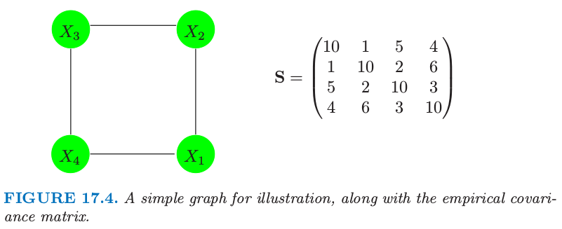
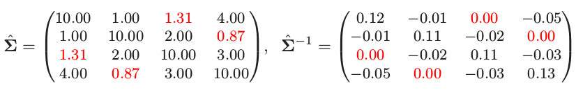

连续变量的无向图模型
| 原文 | The Elements of Statistical Learning |
|---|---|
| 翻译 | szcf-weiya |
| 时间 | 2017-02-24:2017-02-25 |
这里我们考虑所有变量为连续的马尔科夫网络。高斯分布几乎总是用到这样的图模型中，因为它有方便的分析性质。我们假设观测值服从均值为$\mu$，协方差为$\mathbf \Sigma$的多元高斯分布。因为高斯分布表示之多二阶的关系，所以它自动地编码了一个成对马尔科夫图。图17.1的图是高斯图模型的一个例子。

图17.1. 稀疏无向图的例子，从flow-cytometry数据集中估计得到，含有$p=11$个蛋白质在$N=7466$个细胞中的测量值。网络结构是通过本章后面将要讨论的图lasso过程进行估计的。
高斯分布有条性质是所有条件分布也是高斯分布的。协方差矩阵的逆$\mathbf\Sigma^{-1}$包含变量之间的偏协方差(partial covariances)信息；也就是，$i$与$j$在其它所有变量上的协方差。特别地，如果$\mathbf {\Theta=\Sigma^{-1}}$的第$ij$个元素为0，则变量$i$和$j$在给定其它变量情况下是条件独立的。（练习17.3）
验证某个变量在剩余的条件下的条件分布是有好处的，其中$\mathbf\Theta$的作用是显然的。假设我们进行分割$X=(Z,Y)$，其中$Z=(X_1,\ldots,X_{p-1})$包含前$p-1$个变量并且$Y=X_p$是最后一个。于是我们在给定$Z$下有条件分布（比如，Mardia等人，1979） 其中我们将$\mathbf \Sigma$分割成 (17.6)的条件均值与$Y$在$Z$上的总体多重线性回归有完全一样的形式，回归系数为$\beta=\mathbf\Sigma^{-1}_{ZZ}\sigma_{ZY}$。如果我们对$\mathbf\Theta$用同样的方式进行分割，因为$\mathbf{\Sigma\Theta=I}$，由分块矩阵的求逆公式有 其中$1/\theta_{YY}=\sigma_{YY}-\sigma_{ZY}^T\mathbf\Sigma_{ZZ}^{-1}\sigma_{ZY}>0$。因此 我们可以从这里学到两件事情：
- （17.6）中的$Y$对$Z$的依懒性只与均值项有关。这里我们明确地看到$\beta$中的0元素，也是$\theta_{ZY}$中的0元素，意味着$Z$中对应的元素与$Y$在给定其余变量的情况下是条件独立的。
- 我们可以通过多重线性回归了解这个依赖性结构。
因此$\mathbf\Theta$捕捉了所有二阶信息（结构的和定量的），是描述每个顶点在给定剩余点时的条件分布需要的信息，也称为高斯图模型的“自然”参数。
另外一个（不同）图模型为协方差图（covariance）或者相关网络（relevance network）,如果顶点的对应变量间的协方差（不是偏协方差）为0则用双向边连接这些顶点。这在基因问题中很流行，特别地见Butteet等人（2000）的工作。这些模型的负对数似然是非凸的，使得计算更加有挑战（Chaudhuri等人，2007）。
图结构已知时参数的估计
给定$X$的一些观测值，我们想要估计无向图的参数，该无向图近似了它们的联合分布。首先假设图是完全的（全连通）。我们假设有$N$个多维正态观测值$x_i,i=1,\ldots,N$，均值为$\mu$，协方差为$\mathbf \Sigma$。令 为观测值的协方差矩阵，$\bar x$为样本均值向量。忽略掉常数，其对数似然可以写成 (17.11)中我们已经关于均值参数$\mu$进行了偏最大化。$-\ell(\mathbf \Theta)$是$\mathbf \Theta$的凸函数。可以很简单地证明$\mathbf\Sigma$的极大似然估计为$\mathbf S$。
现在使得图更有用（特别在高维数据集中）假设某些边是缺失的，举个例子，图17.1的PIP3和Erk中间的边是缺失边中间的一条。正如我们所见，对于高斯分布这意味着$\mathbf{\Theta=\Sigma^{-1}}$对应的值为0。因此我们现在想要在某些预先定义的参数为0的子集的限制下最大化（17.11）。这是等值约束凸优化问题，提出了许多解决它的方法，特别地，迭代比例拟合过程（Speed和Kiiveri，1996）。这个和其它的方法在Whittaker（1990）和Lauritzen（1996）的例子中作了总结。这些方法探索简化问题，这产生于将图分解成最大团的过程中，正如在之前的章节中描述的那样。这里我们列出一种简单的交替方法，用不同的方式来探索稀疏性。这种方式的效果会在我们讨论图结构估计问题时变得明显。
这个思想基于线性回归，受（17.6）和（17.9）式的鼓舞。特别地，假设我们想要估计与给定顶点$i$相连的顶点的边参数$\theta_{ij}$，那些没有相连的约束为0。于是这似乎是，顶点$i$处的值在其他相关的结点上的线性回归可能提供一个良好的估计。但是这忽略了回归中预测变量的依赖性结构。结果是如果我们当进行回归时采用当前（基于模型的）对预测变量叉积矩阵的估计，这给出了正确地解，并且精确地解出了约束的最大似然问题。我们现在给出细节。
约束对数似然（17.11），我们对缺失边加上拉格朗日常数 最大化（17.12）的梯度等式可以写成 利用$\mathrm{log\; det}\Theta$的导数等于$\mathbf \Theta^{-1}$的事实（如，Boyd和Vandenberghe, 2004，p641）。$\mathbf\Gamma$为所有边缺失的对的非零拉格朗日参数值。
我们将要展示我们可以怎么应用回归来求解$\mathbf\Theta$以及每次求解它的逆$\mathbf{W=\Theta^{-1}}$一行和一列。为了简单我们关注最后一行和最后一列。则（17.13）的右上块可以写成 这里我们将矩阵分块成如（17.7）所示：第一部分为前$p-1$列和行，第2部分为第$p$行和列。$\mathbf W$和它的逆$\mathbf\Theta$以同样的方式分块，我们有 这意味着 其中和（17.9）一样$\beta=-\theta_{12}/\theta_{22}$。现在将（17.17）替换（17.14）式，我们有 这些可以解释成$X_p$在其他预测变量上的约束回归的$p-1$个估计等式，除了观测均值的叉积矩阵$\mathbf S_{11}$用$\mathbf W_{11}$替换，模型的当前协方差估计。
我们可以通过简单的子集回归来求解（17.18）。假设$\gamma_{12}$中有$p-q$个非零元——比如，$p-q$条边约束为0。这$p-q$行没有包含任何信息，而且可以移除掉。更进一步，我们可以通过移除$p-q$个0元素将$\beta$退化成$\beta^*$，得到退化的$p\times p$的等式系统
解为$\hat\beta^*=\mathbf {W_{11}^*}^{-1}s_{12}^*$。在加上$p-q$个0元得到$\hat\beta$。
尽管从(17.16)似乎看出我们仅仅将元素$\theta_{12}$乘以缩放因子$1/\theta_{22}$，可以很简单地证明 (采用分块矩阵求逆)。且$w_{22}=s_{22}$，因为（17.13）的$\mathbf\Gamma$对角元为0。
这导出了在缺失边的约束下，用来估计$\hat{\mathbf W}$和它的逆$\mathbf {\hat\Theta}$的算法17.1中给出的简单迭代过程。

注意到这个算法具有概念意义(conceptual sense)。图估计问题不是$p$个独立的回归问题，而是$p$个成对问题。在步骤(b)中使用共同的$\mathbf W$，而不是观测叉积矩阵，以合适的方式将问题结合在一起。奇怪的是，我们不能在这个领域内找到这个过程。然而这与Dempster(1972)的协方差选择过程有关，而且在分割上与Chaudhuri等人（2007）提出的用过协方差图的迭代条件拟合过程很相似。

图17.4. 一个简单的用于说明的图，以及经验协方差阵。
这里是个小例子，选自Whittaker(1990)。假设我们的模型如图17.4描述，实验协方差阵为$\mathbf S$。我们应用算法（17.1）来解决这个问题；举个例子，在步骤（b）对变量1的修改后的回归中，删掉变量3.这个过程很快收敛到解

注意到$\hat{\mathbf\Sigma} ^{-1}$的0元素，对应缺失边（1,3）和（2,4）。也注意到$\hat{\mathbf \Sigma}$中对应的元素是唯一与$\mathbf S$不同的元素。$\mathbf \Sigma$估计是有时称为$\mathbf S$的正定“完成(completion)”。
图结构的估计
大多数情况下，我们不知道哪些边要从图中省略，因此想试图从数据本身找出。最近几年很多作者提出这个目的的$L_1$(lasso)正则化。
weiya注
省略图中的边，有点类似于做变量选择，而lasso正是应对变量选择的“绝世武功”!
Meinshausen 和 Bühlmann (2006)对这个问题采取简单的方式：不是试图完全估计$\mathbf \Sigma$或者$\mathbf \Theta=\mathbf \Sigma^{-1}$，它们仅仅估计$\theta_{ij}$的那个组分是非零的。为了实现这点，它们将每个变量作为响应变量其它的作为预测变量拟合lasso回归。如果变量$i$在变量$j$上的估计系数为非零，或者（并且）$j$变量在$i$上的估计系数为非零，则组分$\theta_{ij}$估计为非零。它们证明这个过程渐进地一致估计了$\mathbf\Theta$的非零元的集合。
我们可以采取更有系统的含有lasso惩罚的方法，接着上一节的讨论。考虑最大化惩罚的对数似然 其中$\Vert\Theta\Vert^{-1}$为$L_1$范数——$\mathbf \Sigma^{-1}$的元素的绝对值之和（？？？？），并且我们忽略了常数值。这个惩罚似然函数的负数为$\mathbf \Theta$的凸函数。
weiya注
矩阵范数
事实证明，可以采用lasso给出含惩罚的对数似然的精确的最大化。特别地，我们仅仅把算法17.1中修改的回归步骤(b)换成修改的lasso。这里是具体细节。
梯度等式（17.13）的类似形式为 这里我们采用子梯度（sub-gradient）记号，如果$\theta_{jk}\neq 0, \mathrm{Sign}(\theta_{jk})=\mathrm{sign}(\theta_{jk})$，如果$\theta_{jk}=0,\mathrm{Sign}(\theta_{jk})\in[-1,1]$。继续上一节的讨论，我们得到（17.18）的相似形式 （回忆$\beta$和$\theta_{12}$有相反的符号）。我们将会看到这个系统完全等价于lasso回归的估计等式。
考虑一般的回归设定，输出变量为$\mathbf y$，且预测矩阵为$\mathbf Z$。lasso对下式进行最小化 梯度表达式为 所以乘上因子$1/N$（ ？？？？？），$\mathbf {Z^Ty}$是$s_{12}$的类比，并且我们用$\mathbf W_{11}$替换$\mathbf{Z^TZ}$，从我们当前的模型估计叉积矩阵。
得到的过程称为图lasso，有Friedman等人（2007a）提出，建立在Banerjee等人的（2008）工作上。总结在算法17.2中。

Friedman等人（2007a）采用成对坐标下降方法（3.8.6节）来在一步求解修改的lasso问题。这里是图lasso算法的成对坐标下降细节。令$\mathbf {V=W_{11}}$，更新有如下形式 $j=1,2,\ldots,p-1,1,2,\ldots,\ldots,p-1,\ldots,$其中$S$为软阈限算子 这个过程对预测变量循环直到收敛。
可以简单地证明得到解矩阵$\mathbf W$的对角元$w_{jj}$为$s_{jj}+\lambda$，这些是在算法17.2的步骤1中固定。（作者注：可以提出问题（17.21）的另一个构造，我们不对$\mathbf \Theta$的对角元进行惩罚。则解矩阵的对角元$w_{jj}$为$s_{jj}$，算法的剩余部分没有改变）
图lasso算法非常快，而且可以在一分钟之内求解1000个结点的中等稀疏的问题。可以很简单地修改算法得到特定边的惩罚参数$\lambda_{jk}$；因为$\lambda_{jk}=\infty$会强制使$\hat\theta_{jk}$为0，这个算法归入到算法17.1中。通过将稀疏逆协方差矩阵问题作为一系列回归，可以快速地计算并且验证解的路径作为惩罚参数$\lambda$的函数。更多的细节可以在Friedman等人（2007a）中找到。
图17.1显示了将图lasso应用到flow-cytometry数据集中的结果。这里lasso惩罚参数$\lambda$设为14。实际上验证随着$\lambda$变化而得到的不同组的图是有益的。图17.5显示了4个不同的解。当惩罚参数增大时图变得更稀疏。

图17.5. flow-cytometry数据的4个不同的图lasso解。
最后注意到图模型中有些点的值可以被忽视，也就是，缺失或者隐藏。如果一个点上只有一些值缺失，EM算法可以用来插补缺失值（练习17.9）。然而，有时整个点是隐藏的。在高斯模型中，如果一个点有所有的缺失值，由于线性，可以简单地对缺失的结点进行平均，以在观察到的结点上产生令一个高斯模型。因此包含隐藏结点没有丰富观测点的最终模型；实际上，在协方差上加了额外的结构。然而在离散模型中（接下来讨论），固有的非线性使隐藏单元成为扩展模型的有力方式。